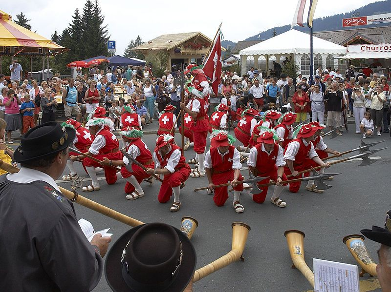
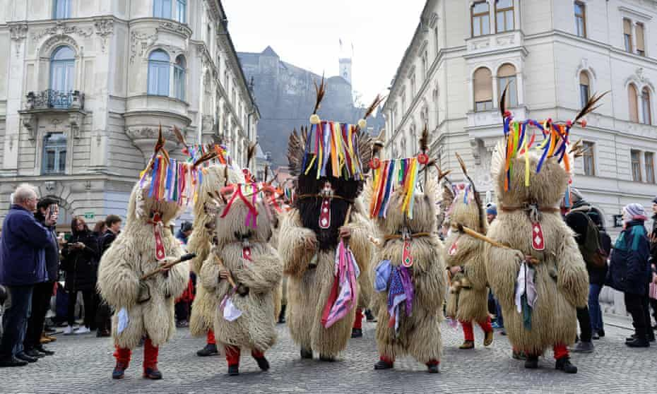

La cultura suiza es una mezcla fascinante de tradiciones, idiomas, música, gastronomía y costumbres europeas. Suiza posee influencias alemanas, francesas e italianas, lo que hace que su cultura sea muy diversa e interesante. Las personas en Suiza valoran mucho el respeto, la puntualidad, la limpieza y la convivencia.
En Suiza existen muchas festividades tradicionales donde las personas utilizan trajes típicos, realizan bailes y celebran con música. Además, el país es conocido por sus relojes, chocolates y quesos, elementos que forman parte importante de su identidad cultural.
Suiza tiene cuatro idiomas oficiales: alemán, francés, italiano y romanche. Esto convierte al país en una nación multicultural donde diferentes tradiciones conviven en armonía. También destacan sus museos, festivales y paisajes naturales.

En Suiza se celebran muchos festivales culturales y musicales. Las personas disfrutan conciertos, danzas tradicionales y eventos llenos de color y alegría.
Los relojes suizos son famosos por su precisión y elegancia. Suiza es considerada uno de los países más importantes en la fabricación de relojes de lujo.

Muchas tradiciones suizas nacieron en las regiones montañosas de los Alpes. Allí las personas conservan costumbres antiguas, comidas típicas y celebraciones especiales.